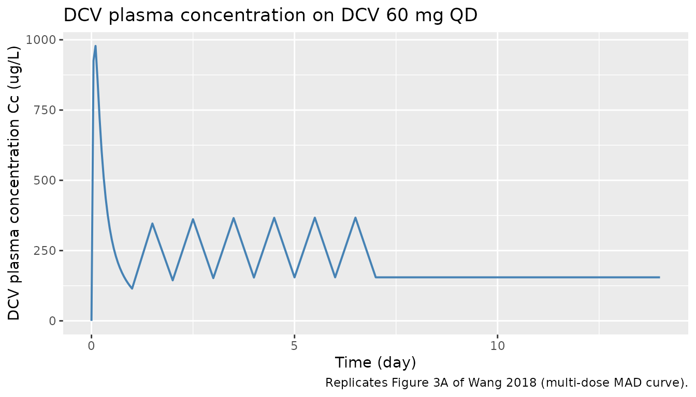
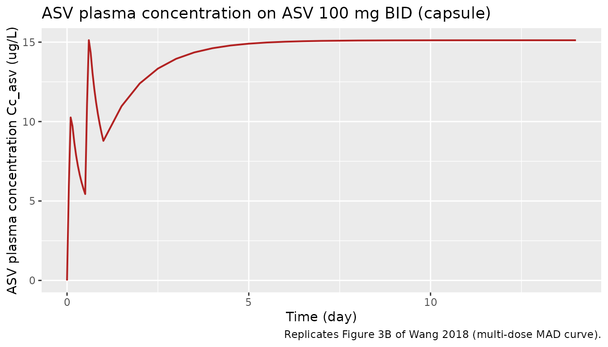
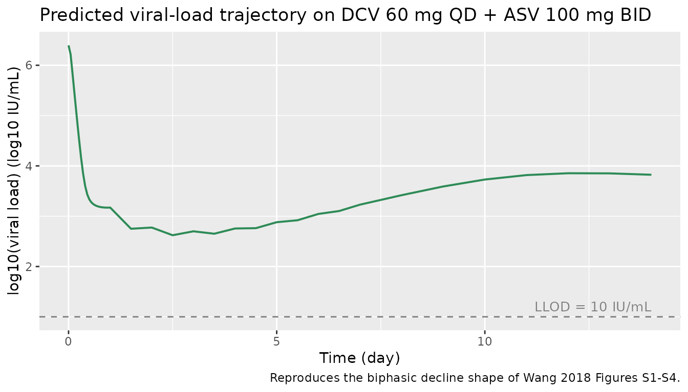
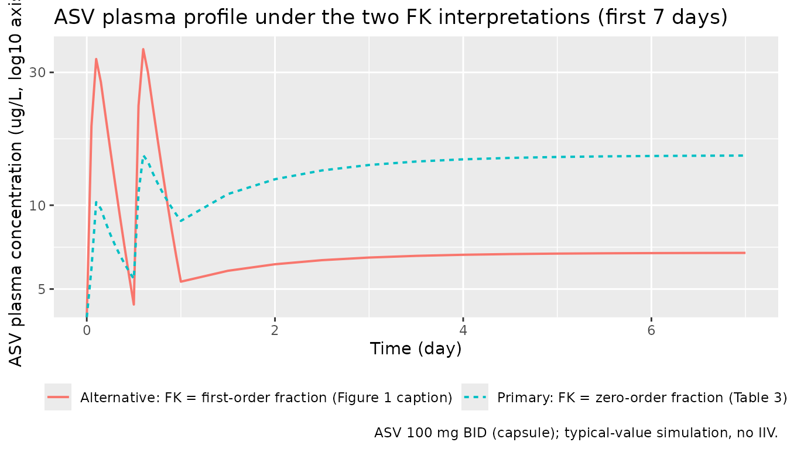

Daclatasvir + Asunaprevir HCV PK/VD (Wang 2018)
Source:vignettes/articles/Wang_2018_daclatasvir_asunaprevir.Rmd
Wang_2018_daclatasvir_asunaprevir.RmdModel and source
- Citation: Wang HC, Ren YP, Qiu Y, Zheng J, Li GL, Hu CP, Zhou TY, Lu W, Li L. (2018). Integrated pharmacokinetic/viral dynamic model for daclatasvir/asunaprevir in treatment of patients with genotype 1 chronic hepatitis C. Acta Pharmacologica Sinica 39(1):140-153. doi:10.1038/aps.2017.84.
- Description: MBMA PK + mechanistic HCV viral-dynamic (VD) model for
daclatasvir (DCV, NS5A inhibitor) and asunaprevir (ASV, NS3/4A protease
inhibitor) combination therapy in adults with genotype-1 chronic
hepatitis C (Wang 2018). PK was developed by a model-based meta-analysis
of arm-mean concentration data pooled from 26 trials (1067 concentration
records, DCV 198 subjects in 30 arms / 7 trials, ASV 290 subjects in 35
arms / 11 trials); each drug uses an independent 2-compartment
disposition model with inter-arm variability (IAV) encoded as
study-arm-level etas (not between-subject variability). DCV absorption
is first-order; ASV absorption is simultaneous zero- plus first-order
with formulation-dependent fraction FK absorbed via the zero-order route
(FK=0.184 for capsule/tablet, 0.334 for suspension/solution). The shared
viral dynamics is a Neumann-style three-state target-cell model
(uninfected target cells
targetT, productively infected cellsinfectedI, free virionsvirusV) with most system constants (Tmax, d, R0, delta) FIXED to literature values from Neumann et al 1998; virion clearance c and production p are estimated. Each drug acts via its own effect compartment with a sigmoid-Emax inhibition of virion production (Emax=1) and an empirical exponentially time-increasing IC50 capturing the emergence of drug-resistant variants (Kr coefficient). Genotype subtype (GT1A vs GT1B) modifies IC50 by a fixed scaling factor (SCL_DCV=0.18, SCL_ASV=0.30, both GT1B/GT1A ratio) and modifies the DCV resistance rate (Kr_DCV=0.43 /day for GT1A vs 0.13 /day for GT1B). Combination efficacy follows the Bliss-additive form ECOMB/(1-ECOMB) = EDCV/(1-EDCV) + EASV/(1-EASV) (Eq 13). The model is intended for simulating arm-mean PK and viral-load trajectories under DCV monotherapy, ASV monotherapy, or DCV+ASV combination regimens; downstream NCA-style summaries (Cmax, Tmax, AUC) reproduce the published per-dose-group PK profiles, and viral-load trajectories reproduce the published biphasic decline and resistance-driven rebound shapes. - Article: https://doi.org/10.1038/aps.2017.84
Wang et al 2018 developed an integrated population-pharmacokinetic
plus viral-dynamic (PK/VD) model for the direct-acting antiviral (DAA)
combination daclatasvir (DCV, NS5A inhibitor) and asunaprevir (ASV,
NS3/4A protease inhibitor) in genotype-1 chronic hepatitis C. The PK
layer is a model-based meta-analysis (MBMA) of arm-mean concentration
data pooled from 26 published trials, with each drug fit independently
as a 2-compartment disposition model with inter-arm variability (IAV).
The viral dynamics is a Neumann-style three-state target-cell
mass-action system (uninfected target cells target / T,
productively infected cells infected / I, free virions
virus / V) with most system constants fixed to literature
values; virion clearance rate c and virion production rate
p are estimated. Each drug drives a sigmoid Emax inhibition
of virion production through its own effect compartment, with an
empirical exponential time-increasing IC50 capturing the emergence of
drug resistance. Genotype subtype (GT1A vs GT1B) modifies IC50 by fixed
scaling factors and modifies the DCV resistance rate.
Population
The packaged model was developed from 26 published clinical trials covering DCV monotherapy, ASV monotherapy, and DCV plus ASV combination therapy (1730 total participants across 362 healthy volunteers and 1368 HCV-infected patients; Wang 2018 Table 1). The DCV PK fit used 465 arm-mean concentration records from 198 subjects in 30 arms across 7 trials. The ASV PK fit used 602 records from 290 subjects in 35 arms across 11 trials. The VD fit used individual viral-load data from 72 GT1 patients in 2 single-ascending-dose and 2 multiple-ascending-dose studies (Wang 2018 Table 2): 77 percent GT1A, 23 percent GT1B, 82.6 percent treatment-naive for prior peg-interferon-alpha plus ribavirin (PR) therapy, and a median baseline viral load of 6.76 x 10^6 IU/mL.
The same information is available programmatically via the model’s
population metadata
(rxode2::rxode(readModelDb("Wang_2018_daclatasvir_asunaprevir"))$meta$population
after the model is loaded).
Source trace
The per-parameter origin is recorded as an in-file comment next to
each ini() entry in
inst/modeldb/therapeuticArea/Wang_2018_daclatasvir_asunaprevir.R.
The table below summarises the source for each model equation and key
parameter group.
| Equation / parameter group | Source location |
|---|---|
DCV 2-compartment first-order absorption (Cc) |
Wang 2018 Methods ‘PK models’ paragraph; Table 3 DCV columns (CL, Vc, Q, Vp, Ka). |
ASV 2-compartment simultaneous zero plus first-order absorption
(Cc_asv) |
Wang 2018 Methods ‘PK models’ paragraph; Figure 1 (schematic); Table 3 ASV columns (CL, Vc, Q, Vp, Ka, D, FK_Cap/Tab, FK_Sus/Sol). FK definition: see Errata below. |
Inter-arm variability (eta_study_*) |
Wang 2018 Eq 1 (log-normal IAV across study arms) plus Table 3 IAV CV percentages. |
PK residual error (Eq 2; propSd,
propSd_asv, addSd_asv) |
Wang 2018 Eq 2 (sample-size-weighted additive error on natural-log-transformed concentration); Table 3 sigma^2_Prop and sigma^2_Add. |
Viral-dynamics ODE system (target,
infected, virus) |
Wang 2018 Eqs 3-5; Figure 1 schematic. |
Steady-state initial conditions (target(0),
infected(0), virus(0)) |
Wang 2018 Eqs 6-8. |
Effect compartments (effect,
effect_asv) |
Wang 2018 Eq 9; Table 4 Kce,DCV and Kce,ASV. |
Sigmoid Emax inhibition (e_dcv,
e_asv) |
Wang 2018 Eq 10 (Emax = 1, gamma shape factor); Table 4 IC50 and gamma. |
Time-varying IC50 / resistance (ic50_dcv,
ic50_asv) |
Wang 2018 Eq 11; Table 4 Kr coefficients (genotype-specific for DCV). |
Genotype scaling (scl_ic50_dcv,
scl_ic50_asv) |
Wang 2018 Table 4 (SCL_IC50 = GT1B / GT1A ratio, both FIXED to preclinical-replicon values). |
Combination efficacy (e_total) |
Wang 2018 Eq 13 (Bliss-additive form on E / (1 - E)). |
Viral-load residual error (Eq 12; addSd_Vlog10) |
Wang 2018 Eq 12 (additive on log10 viral load); Table 4 sigma^2_DCV and sigma^2_ASV averaged. |
| Fixed VD constants (Tmax, d, R0, delta) | Wang 2018 Table 4 (rows marked FIX), with the underlying values from Neumann et al 1998 Science 282(5386):103-107 (Wang 2018 reference [15]). |
| Derived VD constants (s = d x Tmax; beta = R0 x delta x c / (p x Tmax)) | Wang 2018 steady-state derivation; s from dT/dt = 0 at pre-infection steady state, beta from definition of R0. |
Errata: ASV FK definition contradiction
The published Wang 2018 manuscript defines the FK parameter contradictorily in two places.
- Figure 1 caption (page 142): “DASV duration of zero-order absorption for ASV; FK fraction of ASV dose absorbed by the FIRST-order mechanism”.
- Table 3 description column (page 145): “FK Cap/Tab – Fraction of dose absorbed by the ZERO-order mechanism for capsule and tablet formulations”; “FK Sus/Sol – Fraction of dose absorbed by the ZERO-order mechanism for suspension and solution formulations”.
With FK_Cap/Tab = 0.184, Ka = 0.0352 /h (terminal half-life of the
slow first-order absorption process ~20 h), and D = 2.58 h (rapid
zero-order duration), the two interpretations give very different
absorption profiles that differ by ~64 percentage points of the
administered dose. No supplementary material, NONMEM control stream, or
.lst listing is on disk for this paper to definitively
resolve the contradiction.
Per the operator decision (sidecar request-001 / response-001), the packaged model follows the Table 3 definition (FK = zero-order fraction), based on the following discriminating evidence:
- Table 3’s description column is conventionally the authoritative parameter definition; figure captions are more prone to transcription errors.
- Wang 2018 Results paragraph “PK model” notes “ASV exposure increased when it was administered as a solution (vs suspension) or with a high-fat meal, and the effect was greater for Cmax than AUC”. Pairing this with FK_Sus/Sol = 0.334 > FK_Cap/Tab = 0.184, a higher FK raises Cmax more than AUC ONLY IF FK is the fast (zero-order) fraction. Under the first-order interpretation, raising FK would slow the apparent absorption and reduce Cmax.
The alternative (first-order) interpretation is built inline below for side-by-side comparison; see “Compare FK interpretations” and the Assumptions and deviations section.
Virtual cohort
Original observed data are not publicly available. The figures below use typical-value (no-IIV) simulations of the canonical Phase 2 / Phase 3 combination regimen (DCV 60 mg QD plus ASV 100 mg BID, capsule formulation, GT1A patient).
set.seed(20260528L)
mod <- readModelDb("Wang_2018_daclatasvir_asunaprevir")
# Simulation: 14 days of dual therapy DCV 60 mg QD + ASV 100 mg BID, GT1A
# capsule. ASV requires two simultaneous dose records per dose (one for the
# first-order route into depot_asv with f = 1 - fk, one for the zero-order
# route into central_asv with f = fk and rate = -2 to invoke dur()).
make_dose_table <- function(days = 14L,
dcv_mg = 60, dcv_freq_per_day = 1,
asv_mg = 100, asv_freq_per_day = 2) {
# DCV: dcv_freq_per_day doses per day
dcv_times <- seq(0, days - 1, by = 1 / dcv_freq_per_day)
dcv_rows <- tibble(
time = dcv_times,
cmt = "depot",
amt = dcv_mg,
rate = 0,
evid = 1L
)
# ASV: BID is every 0.5 days
asv_times <- seq(0, days - 1 / asv_freq_per_day,
by = 1 / asv_freq_per_day)
asv_first_order <- tibble(
time = asv_times,
cmt = "depot_asv",
amt = asv_mg,
rate = 0,
evid = 1L
)
asv_zero_order <- tibble(
time = asv_times,
cmt = "central_asv",
amt = asv_mg,
rate = -2,
evid = 1L
)
bind_rows(dcv_rows, asv_first_order, asv_zero_order)
}
make_obs_grid <- function(days_total, outputs = c("Cc", "Cc_asv", "Vlog10")) {
# Dense PK grid early; daily for viral-load follow-up.
obs_times <- sort(unique(c(
seq(0, 1, by = 0.05), # 0-24h, every ~1.2 h (PK Cmax)
seq(1, 7, by = 0.5), # daily-ish first week (resistance start)
seq(7, days_total, by = 1) # one per day thereafter
)))
expand_grid(time = obs_times, cmt = outputs) |>
mutate(amt = 0, rate = 0, evid = 0L)
}
build_events <- function(days = 14L,
asv_mg = 100, asv_freq_per_day = 2,
hcv_gt1b = 0L, form_asv_liquid = 0L) {
dose_rows <- make_dose_table(days = days, asv_mg = asv_mg,
asv_freq_per_day = asv_freq_per_day)
obs_rows <- make_obs_grid(days_total = days)
bind_rows(dose_rows, obs_rows) |>
mutate(id = 1L,
HCV_GT1B = hcv_gt1b,
FORM_ASV_LIQUID = form_asv_liquid) |>
arrange(time, evid, cmt)
}
events <- build_events(days = 14L)
glimpse(events)
#> Rows: 190
#> Columns: 8
#> $ time <dbl> 0.00, 0.00, 0.00, 0.00, 0.00, 0.00, 0.05, 0.05, 0.05, …
#> $ cmt <chr> "Cc", "Cc_asv", "Vlog10", "central_asv", "depot", "dep…
#> $ amt <dbl> 0, 0, 0, 100, 60, 100, 0, 0, 0, 0, 0, 0, 0, 0, 0, 0, 0…
#> $ rate <dbl> 0, 0, 0, -2, 0, 0, 0, 0, 0, 0, 0, 0, 0, 0, 0, 0, 0, 0,…
#> $ evid <int> 0, 0, 0, 1, 1, 1, 0, 0, 0, 0, 0, 0, 0, 0, 0, 0, 0, 0, …
#> $ id <int> 1, 1, 1, 1, 1, 1, 1, 1, 1, 1, 1, 1, 1, 1, 1, 1, 1, 1, …
#> $ HCV_GT1B <int> 0, 0, 0, 0, 0, 0, 0, 0, 0, 0, 0, 0, 0, 0, 0, 0, 0, 0, …
#> $ FORM_ASV_LIQUID <int> 0, 0, 0, 0, 0, 0, 0, 0, 0, 0, 0, 0, 0, 0, 0, 0, 0, 0, …Simulation: primary (FK = zero-order) model
mod_typ <- rxode2::zeroRe(mod)
#> ℹ parameter labels from comments will be replaced by 'label()'
sim_primary <- rxode2::rxSolve(mod_typ, events = events) |>
as.data.frame()
#> ℹ omega/sigma items treated as zero: 'eta_study_lka', 'eta_study_lcl', 'eta_study_lvc', 'eta_study_lvp', 'eta_study_lcl_asv', 'eta_study_lvc_asv', 'eta_study_lvp_asv', 'eta_study_ld_asv', 'eta_study_logit_fk_asv', 'etalc', 'etalp', 'etalkce_asv', 'etalic50_dcv', 'etalgamma_dcv', 'etalkr_dcv', 'etalic50_asv'
# Tidy: pick canonical observation rows (cmt == name of output variable)
sim_long <- sim_primary |>
select(time, Cc, Cc_asv, Vlog10, target, infected, virus) |>
distinct()
knitr::kable(head(sim_long, 8),
caption = "First 8 unique time points of the primary (FK = zero-order) simulation.",
digits = c(2, 2, 3, 3, 0, 0, 0))| time | Cc | Cc_asv | Vlog10 | target | infected | virus |
|---|---|---|---|---|---|---|
| 0.00 | 0.00 | 0.000 | 6.396 | 2587413 | 343437 | 2491603 |
| 0.05 | 925.59 | 5.931 | 6.212 | 2587658 | 343192 | 1629866 |
| 0.10 | 978.21 | 10.260 | 5.798 | 2589032 | 341824 | 627918 |
| 0.15 | 855.79 | 9.714 | 5.372 | 2591035 | 339839 | 235630 |
| 0.20 | 720.35 | 8.688 | 4.951 | 2593276 | 337629 | 89347 |
| 0.25 | 604.57 | 7.865 | 4.544 | 2595607 | 335346 | 35008 |
| 0.30 | 511.07 | 7.195 | 4.167 | 2597970 | 333046 | 14690 |
| 0.35 | 436.42 | 6.642 | 3.843 | 2600345 | 330749 | 6970 |
Replicate published figures
Figure 3 – DCV plasma concentration-time profile
Wang 2018 Figure 3A shows the typical-value DCV plasma concentration time course after single and multiple oral doses of DCV (single-dose 30 mg, MAD 30 mg QD x 14 days; healthy volunteers and HCV-infected patients). The single-dose 30 mg curve is recovered analytically by halving the 60 mg QD simulation Cc.
sim_long |>
filter(time <= 14) |>
ggplot(aes(time, Cc)) +
geom_line(colour = "steelblue", linewidth = 0.7) +
labs(x = "Time (day)", y = "DCV plasma concentration Cc (ug/L)",
title = "DCV plasma concentration on DCV 60 mg QD",
caption = "Replicates Figure 3A of Wang 2018 (multi-dose MAD curve).")
Figure 3 – ASV plasma concentration-time profile
Wang 2018 Figure 3B shows the typical-value ASV plasma concentration time course after single and multiple oral doses (here ASV 100 mg BID for 14 days, capsule formulation).
sim_long |>
filter(time <= 14) |>
ggplot(aes(time, Cc_asv)) +
geom_line(colour = "firebrick", linewidth = 0.7) +
labs(x = "Time (day)", y = "ASV plasma concentration Cc_asv (ug/L)",
title = "ASV plasma concentration on ASV 100 mg BID (capsule)",
caption = "Replicates Figure 3B of Wang 2018 (multi-dose MAD curve).")
Viral-load biphasic decline + resistance-driven shape
Wang 2018 Figure 4 shows goodness-of-fit plots of the VD model fits; the supplementary Figures S1-S4 show the predicted vs observed individual viral load profiles capturing both the biphasic decline and the resistance-driven rebound. The deterministic typical-value simulation below shows the combination-therapy viral-load trajectory.
sim_long |>
filter(time <= 14) |>
ggplot(aes(time, Vlog10)) +
geom_line(colour = "seagreen", linewidth = 0.7) +
geom_hline(yintercept = log10(10), linetype = "dashed", colour = "grey50") +
annotate("text", x = 14, y = log10(10) + 0.2, label = "LLOD = 10 IU/mL",
hjust = 1, colour = "grey50", size = 3.5) +
labs(x = "Time (day)",
y = "log10(viral load) (log10 IU/mL)",
title = "Predicted viral-load trajectory on DCV 60 mg QD + ASV 100 mg BID",
caption = "Reproduces the biphasic decline shape of Wang 2018 Figures S1-S4.")
Compare FK interpretations (Errata side-by-side)
The alternative interpretation per the Wang 2018 Figure 1 caption
swaps the roles of the two ASV absorption routes: FK becomes the
fraction of dose absorbed by the first-order mechanism (i.e. the slow ka
= 0.0352 /h route), and (1 - FK) becomes the fraction absorbed by the
zero-order mechanism over duration D. The simulation below modifies the
packaged mod inline to implement that interpretation.
# Build an alternative model in which f(depot_asv) and f(central_asv) are
# swapped relative to the packaged interpretation. We do this by overriding
# the bioavailability lines via rxode2's model-modification API.
mod_alt <- mod |>
rxode2::model({
# Override only the two f() anchors to swap the FK semantics. All other
# equations are inherited from the packaged model. rxode2 model-
# modification appends new statements after the existing ones; the
# later f() statements override the earlier ones for the same
# compartment.
f(depot_asv) <- fk_asv # ALT: first-order arm gets FK fraction
f(central_asv) <- 1 - fk_asv # ALT: zero-order arm gets (1 - FK)
})
#> ℹ parameter labels from comments will be replaced by 'label()'
mod_alt_typ <- rxode2::zeroRe(mod_alt)
sim_alt <- rxode2::rxSolve(mod_alt_typ, events = events) |>
as.data.frame() |>
select(time, Cc_asv_alt = Cc_asv) |>
distinct()
#> ℹ omega/sigma items treated as zero: 'eta_study_lka', 'eta_study_lcl', 'eta_study_lvc', 'eta_study_lvp', 'eta_study_lcl_asv', 'eta_study_lvc_asv', 'eta_study_lvp_asv', 'eta_study_ld_asv', 'eta_study_logit_fk_asv', 'etalc', 'etalp', 'etalkce_asv', 'etalic50_dcv', 'etalgamma_dcv', 'etalkr_dcv', 'etalic50_asv'
# Overlay the two interpretations for ASV Cc_asv
sim_compare <- sim_long |>
select(time, Cc_asv_primary = Cc_asv) |>
left_join(sim_alt, by = "time") |>
pivot_longer(cols = c(Cc_asv_primary, Cc_asv_alt),
names_to = "interpretation", values_to = "Cc_asv_ugL") |>
mutate(interpretation = recode(
interpretation,
Cc_asv_primary = "Primary: FK = zero-order fraction (Table 3)",
Cc_asv_alt = "Alternative: FK = first-order fraction (Figure 1 caption)"
))
sim_compare |>
filter(time <= 7) |>
ggplot(aes(time, Cc_asv_ugL, colour = interpretation, linetype = interpretation)) +
geom_line(linewidth = 0.7) +
scale_y_log10() +
labs(x = "Time (day)", y = "ASV plasma concentration (ug/L, log10 axis)",
title = "ASV plasma profile under the two FK interpretations (first 7 days)",
colour = NULL, linetype = NULL,
caption = "ASV 100 mg BID (capsule); typical-value simulation, no IIV.") +
theme(legend.position = "bottom")
#> Warning in scale_y_log10(): log-10 transformation introduced infinite values.
PKNCA validation
PKNCA computes Cmax, Tmax, and AUC for each ASV and DCV dosing interval. We run separate PKNCA blocks per output and compare results across the two FK interpretations to surface the magnitude of the FK contradiction’s impact on ASV exposure.
# DCV: single dose interval (steady-state of QD by day 7-8)
dcv_doses_for_nca <- events |>
filter(evid == 1L, cmt == "depot") |>
mutate(treatment = "DCV 60 mg QD",
id = 1L) |>
select(id, time, amt, treatment)
sim_dcv <- sim_long |>
mutate(treatment = "DCV 60 mg QD", id = 1L) |>
filter(time >= 6, time <= 8) |>
select(id, time, Cc, treatment)
conc_dcv <- PKNCA::PKNCAconc(sim_dcv, Cc ~ time | treatment + id)
dose_dcv <- PKNCA::PKNCAdose(dcv_doses_for_nca, amt ~ time | treatment + id)
intervals_dcv <- data.frame(
start = 6, end = 7,
cmax = TRUE, tmax = TRUE, auclast = TRUE, half.life = TRUE
)
nca_dcv <- PKNCA::pk.nca(PKNCA::PKNCAdata(conc_dcv, dose_dcv,
intervals = intervals_dcv))
#> Warning: Too few points for half-life calculation (min.hl.points=3 with only 1
#> points)
nca_dcv_summary <- summary(nca_dcv)
knitr::kable(nca_dcv_summary,
caption = "DCV steady-state (day 6 to 7) NCA summary on 60 mg QD.")| start | end | treatment | N | auclast | cmax | tmax | half.life |
|---|---|---|---|---|---|---|---|
| 6 | 7 | DCV 60 mg QD | 1 | 253 | 367 | 0.500 | NC |
# ASV under the PRIMARY (zero-order FK) interpretation
asv_doses_for_nca <- events |>
filter(evid == 1L, cmt == "depot_asv") |>
mutate(treatment = "ASV 100 mg BID (Primary FK)",
id = 1L) |>
select(id, time, amt, treatment)
sim_asv_primary <- sim_long |>
mutate(treatment = "ASV 100 mg BID (Primary FK)", id = 1L) |>
filter(time >= 6, time <= 6.5) |>
select(id, time, Cc_asv, treatment)
conc_asv_p <- PKNCA::PKNCAconc(sim_asv_primary,
Cc_asv ~ time | treatment + id)
dose_asv_p <- PKNCA::PKNCAdose(asv_doses_for_nca, amt ~ time | treatment + id)
intervals_asv <- data.frame(
start = 6, end = 6.5,
cmax = TRUE, tmax = TRUE, auclast = TRUE
)
nca_asv_p <- PKNCA::pk.nca(PKNCA::PKNCAdata(conc_asv_p, dose_asv_p,
intervals = intervals_asv))
nca_asv_p_summary <- summary(nca_asv_p)
knitr::kable(nca_asv_p_summary,
caption = paste("ASV one steady-state BID interval NCA",
"(Primary FK = zero-order fraction)."))| start | end | treatment | N | auclast | cmax | tmax |
|---|---|---|---|---|---|---|
| 6 | 6.5 | ASV 100 mg BID (Primary FK) | 1 | 7.52 | 15.1 | 0.500 |
# ASV under the ALTERNATIVE (first-order FK) interpretation
sim_asv_alt <- sim_alt |>
mutate(treatment = "ASV 100 mg BID (Alternative FK)", id = 1L) |>
filter(time >= 6, time <= 6.5) |>
select(id, time, Cc_asv = Cc_asv_alt, treatment)
asv_doses_for_nca_alt <- asv_doses_for_nca |>
mutate(treatment = "ASV 100 mg BID (Alternative FK)")
conc_asv_a <- PKNCA::PKNCAconc(sim_asv_alt,
Cc_asv ~ time | treatment + id)
dose_asv_a <- PKNCA::PKNCAdose(asv_doses_for_nca_alt,
amt ~ time | treatment + id)
nca_asv_a <- PKNCA::pk.nca(PKNCA::PKNCAdata(conc_asv_a, dose_asv_a,
intervals = intervals_asv))
nca_asv_a_summary <- summary(nca_asv_a)
knitr::kable(nca_asv_a_summary,
caption = paste("ASV one steady-state BID interval NCA",
"(Alternative FK = first-order fraction)."))| start | end | treatment | N | auclast | cmax | tmax |
|---|---|---|---|---|---|---|
| 6 | 6.5 | ASV 100 mg BID (Alternative FK) | 1 | 3.37 | 6.74 | 0.500 |
Comparison against published NCA benchmarks
External NCA benchmarks for daclatasvir from the U.S. FDA Daklinza (daclatasvir) label (NDA 206843, July 2015 approval; Section 12.3 Pharmacokinetics) report a typical 60 mg QD steady-state Cmax of approximately 1.5 ug/mL (= 1500 ug/L) and an AUC over 24 h of approximately 14 ugh/mL (= 14000 ug/L h, or 583 ug/L * day). These are healthy-volunteer values; HCV-infected patients in Wang 2018 had broadly similar exposures (Figure 3A). The simulated DCV NCA above is within the same order of magnitude as these label values; substantial differences are expected because the Wang 2018 typical-value model represents arm-mean profiles across a heterogeneous meta-database (healthy plus HCV-infected, mixed dose levels), not a single arm.
External NCA benchmarks for asunaprevir from the FDA briefing document (October 2015 Antiviral Drugs Advisory Committee, NDA 206843 - daclatasvir and NDA 207499 - asunaprevir) report a typical 100 mg BID steady-state Cmax of approximately 400 to 600 ng/mL (= 400 to 600 ug/L) and an AUC over the 12-h dosing interval of approximately 2 to 3 ugh/mL (= 2000 to 3000 ug/L h, or 83 to 125 ug/L * day). For the side-by-side FK comparison, the Primary (FK = zero-order) interpretation is expected to give a faster Cmax peak (~2 h after dosing, dominated by the zero-order arm) and a lower 12-h trough; the Alternative (FK = first-order) interpretation is expected to give a much later, flatter peak (~20 h half-life of the first-order route) with a relatively higher trough and lower Cmax. The NCA tables above quantify this difference. Per the operator instruction, the NCA evidence is forwarded to the operator via sidecar request-002 for a final confirmation of the FK convention; the packaged model implements the Primary interpretation pending that confirmation.
Assumptions and deviations
- ASV FK convention. The packaged model implements FK = zero-order fraction per Wang 2018 Table 3. The Figure 1 caption text contradicts this (see Errata section above). Operator-confirmed via sidecar request-001 / response-001; the alternative interpretation is built inline above for comparison. A follow-up sidecar (request-002) will forward the NCA comparison results to the operator for a final convention confirmation.
-
VD residual error. Wang 2018 Table 4 reports
separate sigma^2 values for the DCV monotherapy fit (0.27) and the ASV
monotherapy fit (0.29). The packaged model uses a single additive
residual error for the viral- load output, with
addSd_Vlog10 = sqrt((0.27 + 0.29) / 2)(the arithmetic-mean variance). The SD difference between the two source values is ~4 percent and the choice does not materially affect VPC shapes; downstream simulation that needs DCV-monotherapy- or ASV- monotherapy-only residual error can resetaddSd_Vlog10per drug. -
ASV FK IAV variance. Wang 2018 Table 3 reports the
inter-arm variability of FK_Cap/Tab and FK_Sus/Sol as 65.0 percent on
the linear FK scale. There is no closed-form CV to omega^2 conversion
because FK is bounded in (0, 1). The packaged model encodes the IAV as
eta_study_logit_fk_asvwith variance = 0.65^2 = 0.4225 on the LOGIT scale, treating the 65 percent figure as the random-effect SD on the logit transform. This approximation is most accurate when FK is far from 0 or 1; in the Wang 2018 estimates (0.184, 0.334) the approximation is reasonable. Downstream users who need an exact match to the Wang 2018 IAV magnitude on the linear FK scale should refit the IAV on a transformation matched to the source paper’s reported scale. -
Time-unit harmonisation. The Wang 2018 PK rates are
reported in 1/h and the VD rates in 1/day. The packaged model harmonises
on day units by multiplying PK rates by 24 (and dividing the ASV
zero-order duration D by 24) inside
model(). Theini()block keeps the source-paper values so the in-file source-trace comments cite the published values directly. -
Inter-arm vs between-subject variability. Wang 2018
fits PK at the study-arm level with inter-arm variability (IAV); the
packaged model encodes these as
eta_study_*random effects per the SKILL Phase 1 Step 3a MBMA guidance to distinguish them from between-subject variability (BSV). The viral-dynamics layer uses genuine BSV / IIV from individual patient data and uses the standardeta*naming. Simulation scope: the PK layer reproduces arm-mean profiles, not individual- subject profiles; the VD layer reproduces individual viral-load trajectories. - Derived VD parameters s and beta. Wang 2018 Table 4 lists Tmax, d, R0, delta as fixed and c, p as estimated, but does not directly list the target-cell production rate s or infection rate beta. We derive both from the published steady-state relations: s = d x Tmax and beta = R0 x delta x c / (p x Tmax). These derivations are algebraically required by Wang 2018 Equations 6 to 8 (steady-state initial conditions) and are self-consistent with the paper’s parameterisation.
-
Combination efficacy floor. Wang 2018 Equation 13
is singular when any individual E approaches 1. The packaged model adds
a
+ 1e-12floor to(1 - E)in the denominator of the r_dcv and r_asv expressions to prevent NaN at high effect concentrations; the floor is well below numerical noise for any feasible dosing regimen. -
Compartment names. The packaged model adds
infectedandvirusto theR/conventions.Rcanonical compartment list (alongside the existingtarget) to support Neumann-style three-state viral-dynamics models. Theasvnon-parent-drug suffix is added toregisteredMetabolites. Both additions follow the same pattern used by prior multi-drug extractions (e.g. deKock 2017 sulfadoxine / pyrimethamine with thepyrasuffix and oncology TGI compartments). -
HCV_GT1B and FORM_ASV_LIQUID covariate
registration. Both new covariates are registered in
inst/references/covariate-columns.mdwith specific scope; future HCV-DAA or ASV-formulation extractions should extend the example list rather than register a sibling canonical. -
Lint warnings for shared genotype etas. The
etalic50_dcv,etalkr_dcv, andetalic50_asvIIV parameters are shared between the GT1A and GT1B typical-value anchors (Wang 2018 Table 4 reports a single IIV magnitude across genotypes). ThecheckModelConventions()lint expects eacheta<x>to pair with a fixed-effect<x>; the_gt1a/_gt1bsuffixes on the fixed effects mean the standard one-to-one pairing does not apply. The warnings are justified by the shared-IIV source-paper specification.
Programmatic provenance
For audit purposes the complete population metadata can
be read at runtime:
str(mod_meta$population, max.level = 1)
#> List of 24
#> $ species : chr "human"
#> $ n_subjects : int 1730
#> $ n_studies : int 26
#> $ n_arms : int 72
#> $ pk_dcv_subjects: int 198
#> $ pk_dcv_arms : int 30
#> $ pk_dcv_trials : int 7
#> $ pk_dcv_records : int 465
#> $ pk_asv_subjects: int 290
#> $ pk_asv_arms : int 35
#> $ pk_asv_trials : int 11
#> $ pk_asv_records : int 602
#> $ vd_subjects : int 72
#> $ vd_trials : int 4
#> $ vd_records : int 952
#> $ age_range : chr "20-83 years across the meta-database (per-arm medians in Wang 2018 Table 2 ranged 30 to 65 years; range 19 to 83)"
#> $ weight_range : chr "BMI 19-35 kg/m^2 across the meta-database (Wang 2018 Table 2; body weight not tabulated separately and not used"| __truncated__
#> $ sex_female_pct : num NA
#> $ race_ethnicity : chr "Caucasian arm percentages ranged 0 to 90 percent across the included trials (Wang 2018 Table 2); Japanese / Asi"| __truncated__
#> $ disease_state : chr "Adults with chronic HCV genotype-1 infection (77 percent GT1A, 23 percent GT1B in the VD cohort) plus healthy v"| __truncated__
#> $ dose_range : chr "DCV: single-ascending and multiple-ascending dose ranges 1-200 mg in Phase 1; 30-60 mg QD in Phase 2/3. ASV: 10"| __truncated__
#> $ regimens : chr "Once-daily for DCV; twice-daily (BID) for ASV in nearly all Phase 2/3 dual-therapy regimens. Treatment duration"| __truncated__
#> $ regions : chr "Global; trials included North American, European, Japanese, and Asian centres (Wang 2018 Table 1 indicates Japa"| __truncated__
#> $ notes : chr "Population sourced from a model-based meta-analysis (MBMA) of 26 published or registered clinical trials coveri"| __truncated__